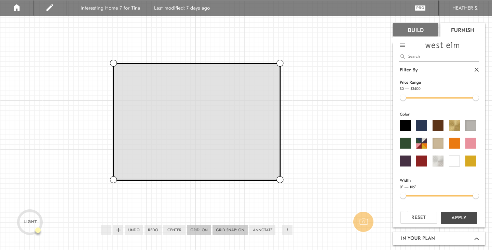

The Process
User Flow
We know we want some sort of filtering system. I began by creating a user flow to draft out the entry points, the flow of this feature, and edge cases I needed to design for.
Helping ease the process of navigating a product catalog to find the perfect pieces for any space.
UX Designer: research, ideation, interaction and interface design, user flows, prototyping, UI documentation

There was no way to filter down the catalog in the Room Planner app. Users had to scroll thru endless products to find the one they were looking for, which was a difficult task because there are thousands of items.
An efficient filtering system that will help people find what they were looking for more easily.
We know we want some sort of filtering system. I began by creating a user flow to draft out the entry points, the flow of this feature, and edge cases I needed to design for.
I worked with backend engineers to understand what data was available for me to create filters from. With my engineering background, I wrote python scripts to analyze the data in the CSV files that they provided me. Based off the data available combined with knowledge and research into common ecommerce filters, we decided to filter by:
For each filter, I explored different types of selection controls as well as different visual treatments. Through testing on people and researching best practices, I was able to determine the best medium for each filter.